Dev
WORKSHOP / AGENTIC SDLC
Dari issue ke keputusan merge
Pelajari cara membagi pekerjaan antara manusia dan agent dengan satu aplikasi klaim biaya.
Mulai dengan satu klaim
PT Nusantara Finansial (fiktif) membutuhkan alur yang mudah ditelusuri: Rani mengajukan biaya, manager memeriksa, dan Finance membaca laporan.
- Tulis kriteria untuk satu perubahan: tanggal klaim.
- Delegasikan ke Copilot agar membuat draft PR, bukan mengubah main.
- Periksa test, perubahan UI, dan review.
- Manusia memutuskan lanjut, revisi, atau berhenti.

Baca alur sebagai teks
- Completion → melengkapi → Chat
- Chat → menjawab sebelum delegasi → Coding agent
- Coding agent → berkolaborasi dengan → Tim agent
Mulai dari peranmu
EM / PM
Issue ke draft PR
QA
Temukan kasus batas
AppSec
Baca hasil CodeQL
CISO
Izin, audit, biaya
EKSEKUTIF
Capstone
Titik kontrol manusia

Baca alur sebagai teks
- Plan · S11 → memandu → Build · S02
- Build · S02 → memicu → Test · S08
- Test · S08 → melaporkan ke → Review · S09
- Review · S09 → meminta → Security · S10
- Security · S10 → memberi bukti untuk → Deploy · S15
- Deploy · S15 → menyediakan dasar untuk → Operate · S12/13
- Operate · S12/13 → membawa masukan ke → Plan · S11
- Inner loop
- 1 / 5
- Delegasi
- 2 / 5
- Tim virtual
- 3 / 5
- Workflow
- 4 / 5
- Governance
- 5 / 5
Skala ilustrasi urutan materi. Review manusia dan izin minimum tetap berlaku pada semua level.